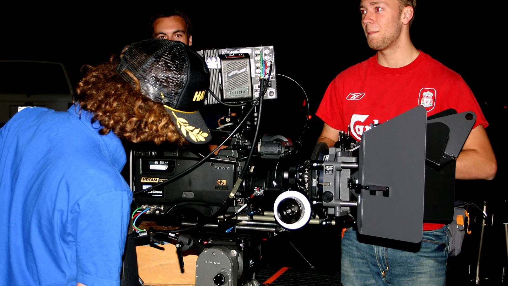

Google lanza Gemini Omni 1.2 Flash: vídeo con audio de hasta 15 segundos y un 30 % más barato
El modelo de vídeo de Google ya está disponible para todos los desarrolladores, con clips más largos, edición por conversación y llegada a Vids, Flow y Gemini.

Google ha declarado generalmente disponible Gemini Omni 1.2 Flash, su modelo que crea vídeo con audio sincronizado. Los clips pasan de 10 a 15 segundos y el precio baja un 30 % hasta unos 0,07 dólares por segundo en 720p.
Datos clave
El 5 de noviembre de 2026, Google anunció que Gemini Omni 1.2 Flash, su modelo de generación de vídeo, pasa a estar disponible de forma general. «Generalmente disponible» significa que deja de ser una vista previa: tiene garantías de servicio para empresas y se puede usar en producción. Omni genera vídeo con audio nativo, es decir, voces y sonidos creados a la vez que las imágenes, a partir de texto, imágenes o clips de vídeo.
Las novedades principales, según el blog oficial de Google, son tres. Primero, la duración: los clips se pueden configurar entre 3 y 15 segundos, en pasos de un segundo, cuando la versión 1.1 se quedaba en 10. Segundo, el precio: Google lo describe como alrededor de un 30 % más barato que Omni 1.1, con una tarifa de 0,07 dólares por segundo de vídeo en 720p. Con esa cifra, un clip de 10 segundos ronda los 0,70 dólares y uno de 15 segundos algo más de un dólar, según los cálculos del medio Unite.AI a partir de la tabla de precios. Tercero, la edición: se pueden hacer cambios conversacionales sobre clips completos de 15 segundos, como sustituir un fondo o cambiar la iluminación, sin regenerarlo todo desde cero.
El flujo de trabajo propuesto es de borrador a versión final. Puedes generar pruebas en 360p o 720p, que son más baratas y rápidas, y escalar solo los clips que te convencen a 1080p o a 4K. Además, el modelo acepta imágenes de referencia de personajes, productos o estilos, clips de movimiento de hasta tres segundos y pistas de audio. Google afirma que mejora la coherencia entre el primer y el último fotograma, que el habla suena más natural con sincronización labial y varios interlocutores, y que los movimientos de cámara son más suaves y con menos saltos de corte.
Hay una parte pensada para quien no programa. Google Vids, su herramienta de vídeo para presentaciones y trabajo, ofrece clips de 15 segundos sin coste adicional con una cuenta de Google o una suscripción de Workspace. En la aplicación de Gemini, los vídeos de 15 segundos se están desplegando para los suscriptores de Google AI Ultra, el plan más alto. El modelo también está en Flow, el estudio de creación de Google, en Google Ads para crear campañas y en Google AI Studio. Para desarrolladores, está en la API de Gemini y en Google Cloud con capacidad reservada, lo que importa a empresas que no pueden depender de una cola compartida.
Según el resumen de Unite.AI, que enlaza los documentos de desarrolladores, el modelo no está disponible en el nivel gratuito de la API y requiere una cuenta de pago. Los clips generados con la API pueden ampliarse añadiendo entre 3 y 10 segundos por turno hasta un máximo de 30 segundos en total, aunque no se puede añadir metraje al principio ni insertarlo a mitad del clip. Los modelos anteriores seguirán disponibles durante un periodo de transición de cuatro semanas, tras el cual las peticiones a la versión 1.1 se redirigirán automáticamente a la 1.2 con sus tarifas.
Google reconoce límites. Dice que sigue trabajando en las acciones deportivas rápidas, los cambios de guion veloces y la física compleja, tres terrenos donde los modelos de vídeo suelen fallar: una pelota que rebota mal o unas manos con comportamientos extraños. Según la documentación citada por Unite.AI, la API soporta plenamente el inglés y no se han evaluado otros idiomas, y aún no admite editar la voz ni subir audio propio como entrada. Todas las salidas llevan SynthID, una marca de agua invisible que se puede detectar por programa y sirve para identificar que el vídeo lo generó una IA.
Lo que aún no está claro es cómo se comportará en español y en trabajo real. Google publica comparativas internas, y según Unite.AI, citando las pruebas lado a lado de Google DeepMind, la versión 1.2 gana a la 1.1 por un 62 % frente a un 38 % en consistencia visual, y por un 63 % frente a un 37 % en coherencia de identidad con varias referencias. Son datos del propio fabricante, no de una evaluación independiente, así que conviene probarlo con tus propios casos antes de contratar nada.
Qué significa para ti
- Si usas Google Vids o una cuenta de Workspace, puedes probar clips de 15 segundos sin pagar nada extra; para crear vídeo con IA a coste cero no hace falta la API.
- Si haces anuncios o vídeos de producto, el flujo de borrador barato y versión final en 1080p o 4K te permite iterar sin gastar apenas: tira varias pruebas a 360p antes de escalar la buena.
- Si publicas vídeos creados con IA, ten en cuenta que llevan una marca invisible SynthID: no es un truco, es la forma en que Google permite detectar su origen.
- Antes de apostar por la API para un proyecto, calcula el coste de tus clips con la tabla oficial y recuerda que el nivel gratuito no incluye este modelo.
Para aprovecharlo
Fuentes
- Google, anuncio oficial de Gemini Omni 1.2 Flash
- Unite.AI, Gemini Omni 1.2 Flash reaches general availability
¿Ves un error? Avísanos y lo corregimos en la fe de erratas.